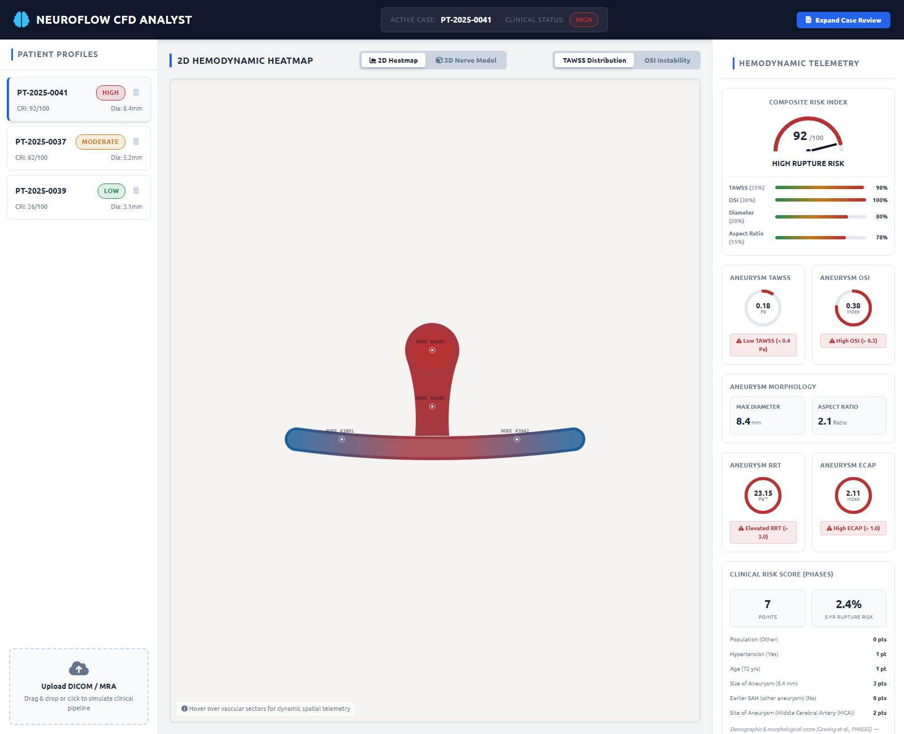
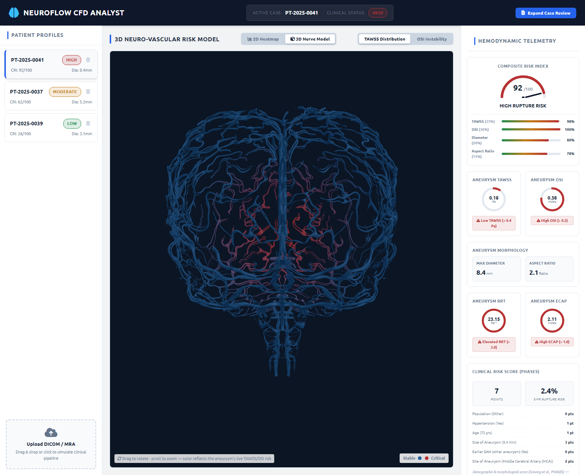
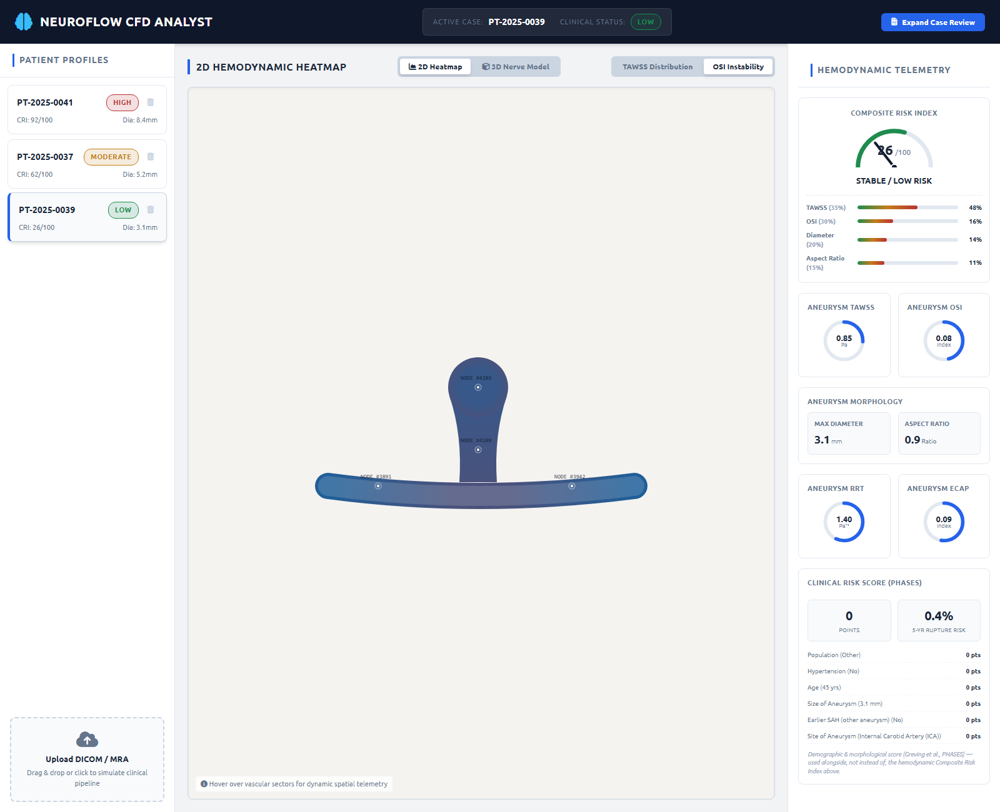
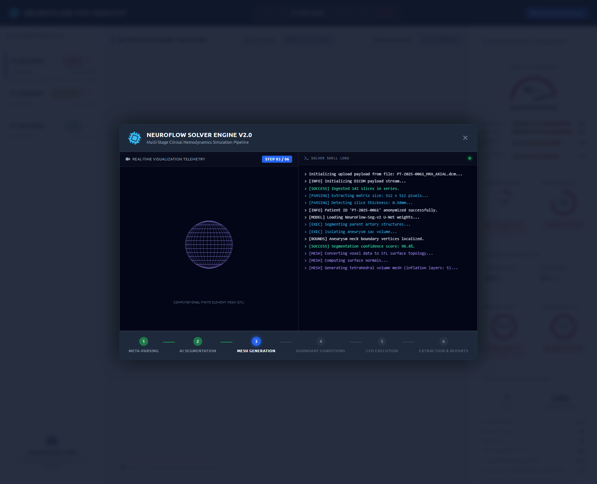
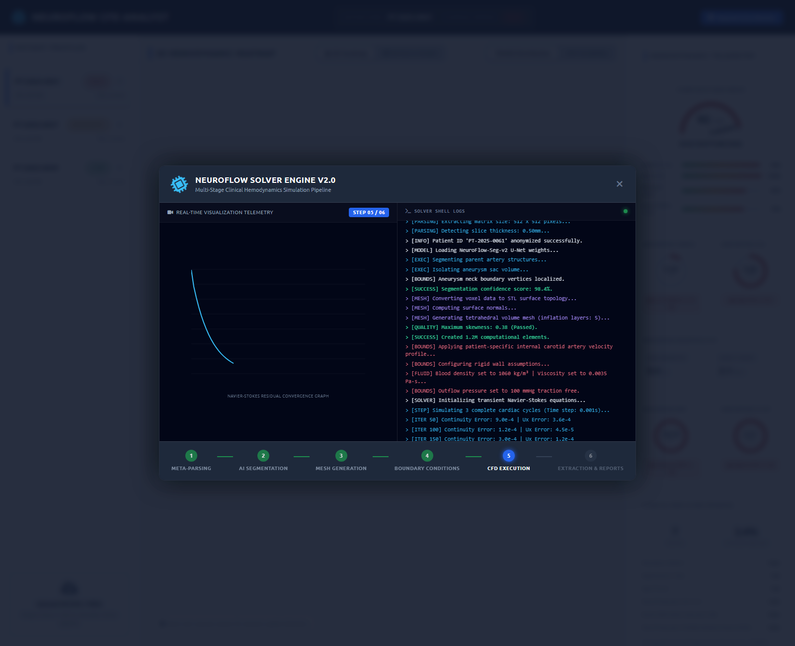
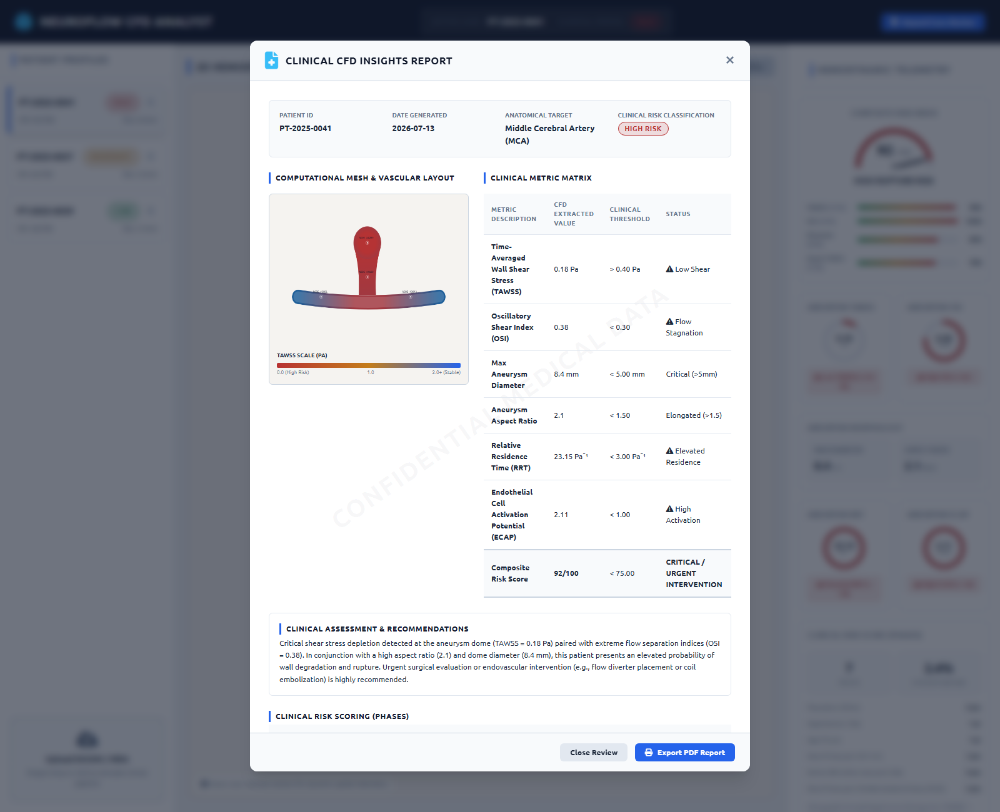

Cerebral aneurysms are localized dilations of intracranial blood vessels whose rupture causes subarachnoid hemorrhage, a condition with high mortality and morbidity. Clinical decision-making around whether an unruptured aneurysm requires intervention or monitoring increasingly draws on Computational Fluid Dynamics (CFD)-derived hemodynamic biomarkers — principally Time-Averaged Wall Shear Stress (TAWSS) and the Oscillatory Shear Index (OSI) — alongside demographic and morphological risk scores such as PHASES.
NeuroFlow CFD Analyst is a web-based clinical decision-support dashboard that
visualizes these hemodynamic and morphological indicators for patient-specific cerebral aneurysm cases.
The system presents a 2D color-mapped hemodynamic heatmap, an interactive 3D vessel/nerve visualization,
a live-computed Composite Risk Index with factor-level explainability, supplementary markers (Relative
Residence Time and Endothelial Cell Activation Potential), a PHASES clinical risk score, and an
exportable clinical report. A DICOM metadata ingestion pipeline (Python, pydicom) forms the
first real backend component toward a full CFD pipeline. This document describes the project's
motivation, design, implementation, and evaluation, and outlines the path toward a fully computed
(rather than visualized) hemodynamic simulation backend.
An intracranial (cerebral) aneurysm is an abnormal bulge in the wall of a brain artery, most commonly forming at arterial bifurcations where hemodynamic stress is highest. Most aneurysms are discovered incidentally during imaging performed for unrelated reasons and never rupture; however, when rupture does occur, it produces a subarachnoid hemorrhage with mortality reported in the range of 30–50%. The central clinical question — and the one this project is built around — is therefore not "does this patient have an aneurysm?" but "how likely is this specific aneurysm to rupture, and does that risk justify the risk of surgical or endovascular intervention?"
Traditional risk stratification relied primarily on aneurysm size and patient demographics. Over the past decade, CFD-derived hemodynamic parameters — computed by simulating blood flow through a patient-specific 3D reconstruction of the vessel, typically segmented from MRA (Magnetic Resonance Angiography) or CTA (Computed Tomography Angiography) imaging — have been shown to correlate with rupture status, motivating the development of hemodynamics-aware clinical decision-support tools.
Raw CFD output (millions of mesh nodes, each carrying multiple time-varying scalar fields) is not directly usable by a clinician at the point of care. There is a need for a dashboard layer that:
NeuroFlow CFD Analyst was built to address this dashboard layer, using a realistic patient dataset and a clinically-grounded set of derived metrics, with an explicit, documented boundary around which parts of the system are computed live from data versus which represent a scripted visualization of a solver pipeline that a production deployment would replace with a real backend (see Section 9).
pydicom)
as the first backend step toward a full CFD pipeline.Patient-specific hemodynamic CFD analysis of cerebral aneurysms follows a well-established pipeline: (1) medical image acquisition (MRA/CTA), (2) vessel segmentation to produce a 3D surface model, (3) surface and volumetric mesh generation, (4) assignment of patient-specific or population-averaged boundary conditions (inlet velocity waveform, outlet pressure, blood density/viscosity), (5) numerical solution of the unsteady Navier–Stokes equations over several cardiac cycles, and (6) post-processing to extract wall-based hemodynamic fields. SimVascular is the most widely cited fully open-source implementation of this entire pipeline, and is frequently paired with the Vascular Modeling Toolkit (VMTK) for vessel-lumen extraction and centreline-based geometric analysis; solvers such as OpenFOAM are also used for the Navier–Stokes solve stage. NeuroFlow CFD Analyst's simulated six-stage pipeline (Section 6.7) mirrors this exact stage sequence for demonstration purposes.
Four wall-based scalar fields are used in this project, all derived from the same underlying quantity — the instantaneous Wall Shear Stress (WSS) vector field on the vessel surface, integrated or statistically summarized over one cardiac cycle:
| Parameter | Definition | Rupture Association |
|---|---|---|
| TAWSS Time-Averaged Wall Shear Stress |
Magnitude of the WSS vector averaged over one full cardiac cycle. | Low TAWSS is associated with flow stagnation and endothelial dysfunction at the aneurysm wall. |
| OSI Oscillatory Shear Index |
Measures the degree to which the WSS vector direction reverses during the cycle; ranges 0–0.5. | High OSI indicates disturbed, non-unidirectional flow linked to wall degeneration. |
| RRT Relative Residence Time |
Combines TAWSS and OSI: RRT ∝ 1 / ((1−2·OSI)·TAWSS) |
Approximates how long blood constituents reside near the wall; elevated RRT is associated with atherogenic, pro-thrombotic conditions. |
| ECAP Endothelial Cell Activation Potential |
ECAP = OSI / TAWSS |
Values above ≈1 indicate the oscillatory component dominates over mean shear, a pattern associated with elevated rupture risk in CFD-based rupture-risk studies. |
Combining more than one of these markers is explicitly recommended in current literature; single-metric (TAWSS- or OSI-only) assessment is noted to be an oversimplification of the true multi-factorial hemodynamic environment at the aneurysm wall.
The PHASES score (Greving et al., 2014) is a validated, points-based score for estimating the 5-year cumulative rupture risk of an unruptured intracranial aneurysm from six independent factors: Population/ethnicity, Hypertension, Age, aneurysm Size, Earlier subarachnoid hemorrhage from a different aneurysm, and Site of the aneurysm. It is a purely demographic/morphological score — it does not use any hemodynamic (flow) information. Current clinical guidance recommends combining scores like PHASES with imaging-derived and hemodynamic assessment for a fuller risk picture, since morphological/demographic scores alone have been shown in follow-up studies to under-perform when used as the sole predictor of subsequent rupture. This is the rationale for reporting the PHASES score in this project as a distinct, complementary panel alongside — not merged into — the CFD-derived Composite Risk Index.
| Layer | Technology | Purpose |
|---|---|---|
| Structure & Styling | HTML5, CSS3 | Dashboard layout, responsive panels, print-styled clinical report |
| Application Logic | Vanilla JavaScript (ES6+) | State management, DOM rendering, metric computation, pipeline orchestration |
| 2D Visualization | HTML5 Canvas API | Hemodynamic heatmap, mesh/convergence animation panels |
| 3D Visualization | Three.js (WebGL), GLTFLoader, OrbitControls | Interactive 3D nerve/vessel model with per-vertex risk coloring |
| Backend Prototype | Python 3, pydicom | Real DICOM metadata extraction (Patient ID, Modality, Slice Thickness, etc.) |
| Icons / Typography | Font Awesome, Google Fonts (Ubuntu) | UI iconography and typography |
The application follows a client-side, single-page architecture with a clear separation between the data model (an in-memory patient database keyed by patient ID, each record holding raw hemodynamic zone data, morphology, and demographics), derived-metric functions (pure functions that compute CRI, RRT, ECAP, and PHASES from the raw data on every render, so displayed values can never drift out of sync with their inputs), and the rendering layer (Canvas 2D heatmap, Three.js 3D viewer, and DOM-based gauge/report components), all coordinated by a central patient-selection state.
Each patient record stores an array of anatomical zones (Parent Artery Inlet, Parent Artery Outlet, Aneurysm Neck, Aneurysm Dome), each carrying its own TAWSS and OSI reading — mirroring how a real CFD post-processor reports results at discrete mesh nodes rather than as a single aggregate value. Patient cards in the sidebar display the live-computed Composite Risk Index and aneurysm diameter, and include a delete control (with confirmation, and safeguards against removing the last remaining case) so uploaded or mock cases can be managed without a page reload.
The heatmap is drawn on an HTML5 Canvas as a parent-artery tube with an aneurysm neck/dome rising from its midpoint. Each zone's color is computed by linearly interpolating between a stable-blue and critical-red hex color, using a mode-dependent normalization: TAWSS values are inverted (low TAWSS → red) and normalized against a 0.15–1.5 Pa range; OSI values are normalized directly against a 0.03–0.35 range. Healthy parent-artery zones have their color factor dampened (×0.2) so that non-aneurysm anatomy remains visually calm even under the same color scale. Hovering any node opens a tooltip with its exact TAWSS/OSI readings and a rupture-vulnerability flag where applicable.
A supplied .glb 3D asset was found on inspection to contain three sub-meshes: a
high-density (≈450,000-vertex) branching vessel/nerve network, and two lower-relevance solid brain-shape
meshes bundled in the same file. Only the vessel/nerve mesh is rendered; the brain-shape meshes are hidden,
since they would otherwise visually occlude the vessel network entirely. Risk coloring is applied
per vertex rather than as a uniform tint: a "hotspot" region is approximated as the topmost
cluster of vertices (consistent with where the aneurysm dome is positioned in the 2D layout), and each
vertex's redness is scaled by both its proximity to that hotspot and the patient's live TAWSS/OSI-derived
risk factor — so the vessel network stays blue overall, with only the clinically critical region
shifting toward red. The viewer supports mouse-driven orbit/zoom via Three.js OrbitControls.
The Composite Risk Index (CRI) is computed live, not stored, as a weighted sum of four normalized sub-scores:
Scores of 75 or above are classified High Rupture Risk, 45–74 Moderate, and below 45 Stable/Low Risk. Because every consumer of this score (patient cards, the composite gauge, the report modal) calls the same function against the same underlying zone data, the displayed number can never disagree with the raw metrics shown elsewhere in the dashboard. A breakdown panel beneath the gauge renders each factor's percentage contribution as a labeled bar, directly answering "how was this number produced?" for the benefit of clinical (and academic) review.
RRT and ECAP (defined in Section 4.2) are computed from the same dome TAWSS/OSI values and displayed as two additional radial gauges, with alert thresholds of RRT > 3.0 Pa−1 and ECAP > 1.0 respectively. The RRT formula's denominator is numerically guarded against the OSI → 0.5 singularity.
Each patient record carries a demographics object (age, hypertension status, prior SAH
history, population category, aneurysm site). A dedicated scoring function reproduces the published PHASES
point table and 5-year cumulative risk-percentage lookup, and renders both the point breakdown and resulting
percentage in a dedicated card, explicitly labeled as a demographic/morphological score used alongside
the hemodynamic CRI rather than folded into it — consistent with the multimodal approach described in
Section 4.3.
Uploading a DICOM/MRA file triggers a six-stage, timed visualization mirroring the real-world pipeline described in Section 4.1: (1) DICOM ingestion & metadata parsing, (2) AI segmentation, (3) surface/volume mesh generation, (4) boundary-condition assignment, (5) CFD solver execution with a live residual-convergence plot, and (6) metric extraction & report compilation. Each stage renders its own Canvas-based animation (an axial-scan overlay, a rotating wireframe mesh, a pulsatile inflow waveform, and a logarithmic convergence curve respectively) alongside a scrolling terminal log. On completion, a new patient record is generated with hemodynamic values seeded from the filename pattern, and the same live-computed CRI/RRT/ECAP/PHASES pipeline is applied to it exactly as it is for the seed patients.
The "Expand Case Review" report compiles all computed metrics (TAWSS, OSI, RRT, ECAP, diameter, aspect ratio, Composite Risk Score, and the full PHASES breakdown) into a structured table against their clinical thresholds, alongside a snapshot of the current heatmap and a narrative clinical assessment. The report is exportable via the browser's print pipeline to PDF.
A standalone Python module (neuroflow-local-pipeline/) uses pydicom to safely
extract standard DICOM header fields (PatientID, Modality, StudyDate,
Rows, Columns, SliceThickness) via defensive getattr()
access, with physiological constants (blood density 1060 kg/m³, viscosity 0.0035 Pa·s) centralized
in a configuration module. This is the one component of the pipeline that performs genuine, non-simulated
processing on real DICOM input, and is structured so it can be dropped directly into an asynchronous task
worker (e.g., Celery) in a future backend-integrated version.
The following figures document the working application across its major views, captured from a live session of the dashboard.






The application was validated through automated, browser-driven end-to-end testing (Playwright with headless Chromium) covering:
What is real and independently verifiable in the current system: the Composite Risk Index, RRT, ECAP, and PHASES score computations (Sections 6.4–6.6); the DICOM metadata parser (Section 6.9); and the full rendering/visualization pipeline.
NeuroFlow CFD Analyst demonstrates a complete, clinically-informed dashboard layer for cerebral aneurysm hemodynamic risk assessment: a live-computed, explainable Composite Risk Index; supplementary CFD-literature markers (RRT, ECAP); an independent, validated demographic risk score (PHASES); 2D and 3D visualizations driven by the same underlying data; and an exportable clinical report. The project's real backend component — DICOM metadata parsing — establishes a concrete foundation for the segmentation, meshing, and solver integration work identified in Section 10 as the path to a fully computed (rather than visualized) hemodynamic simulation system. Documenting clearly which components are computed versus simulated (Section 9) was treated as a first-class design requirement throughout the project, consistent with the standards expected of clinically-oriented software.